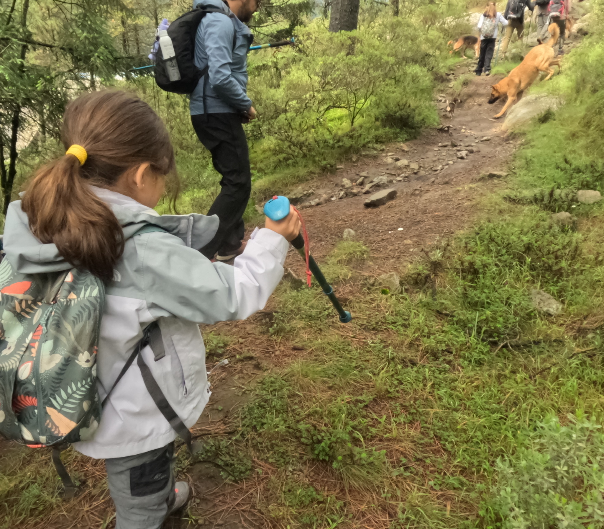
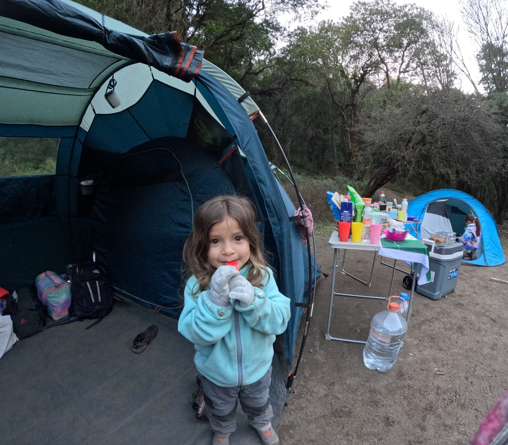
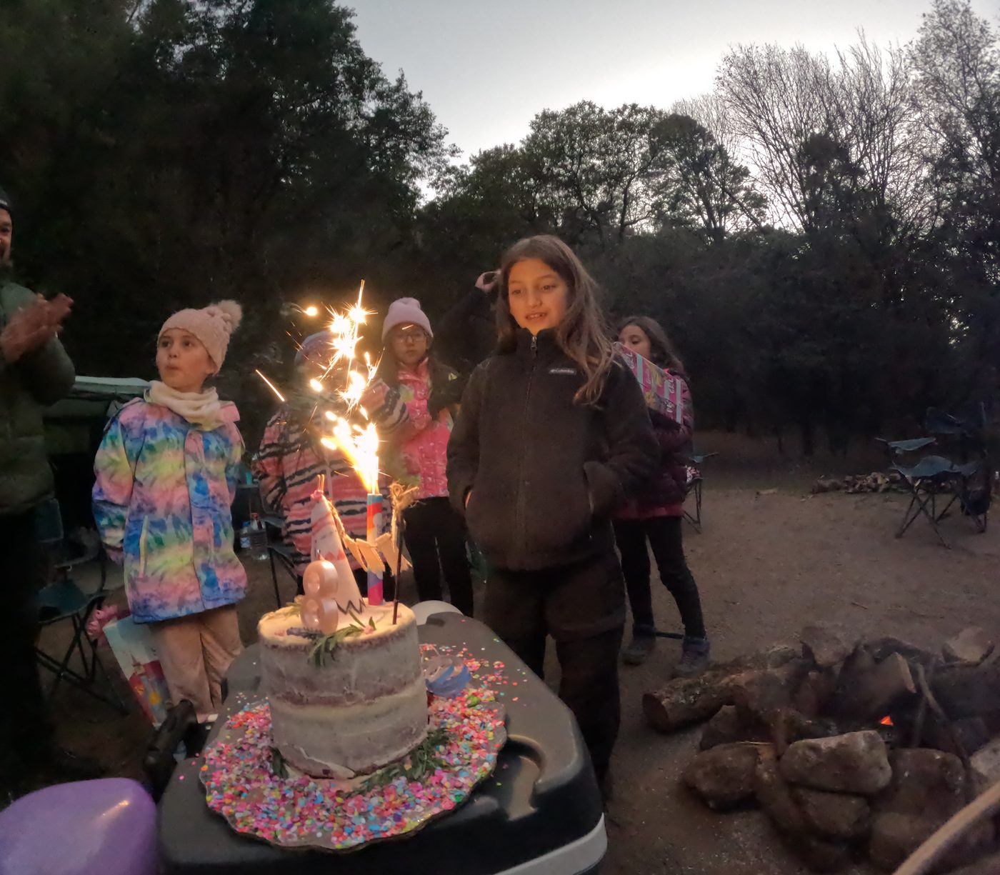
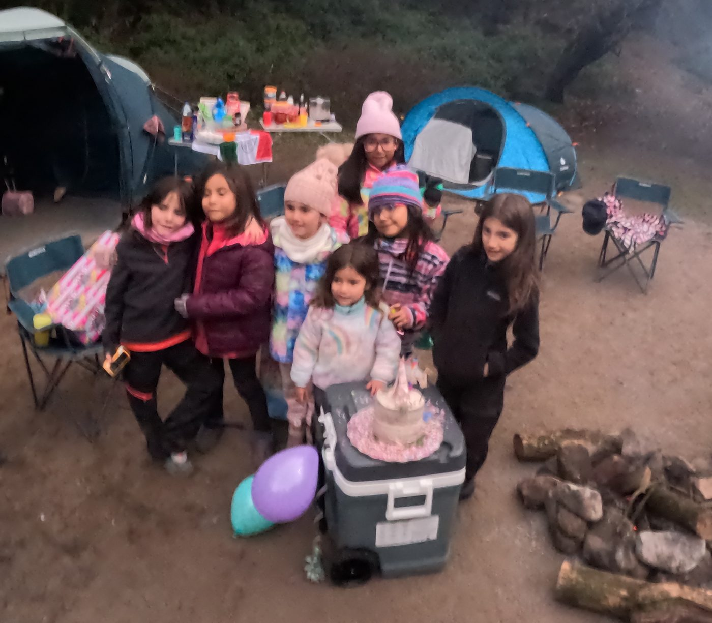
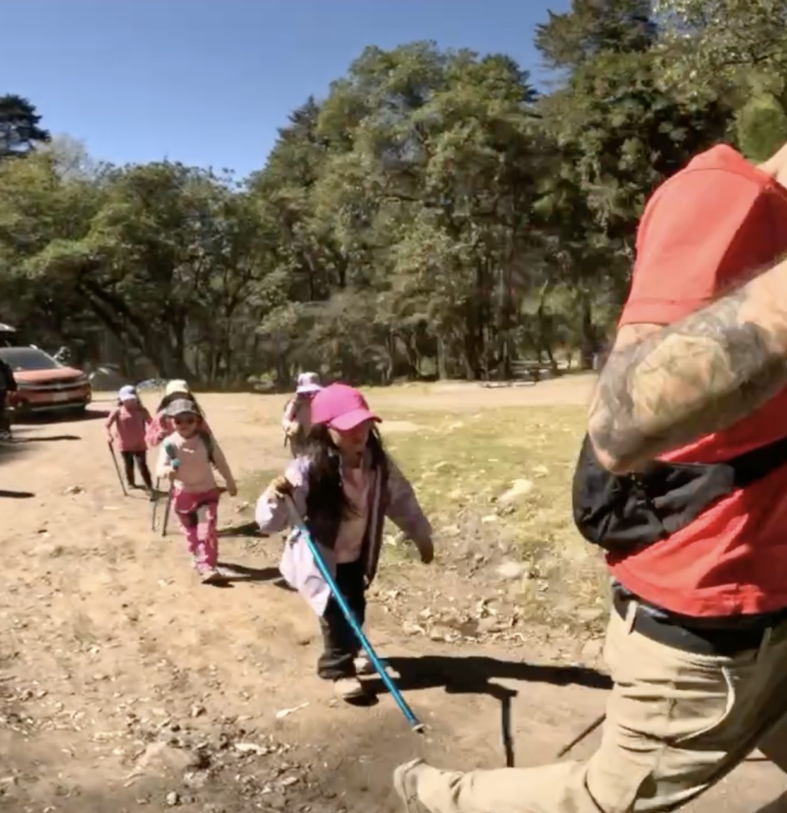
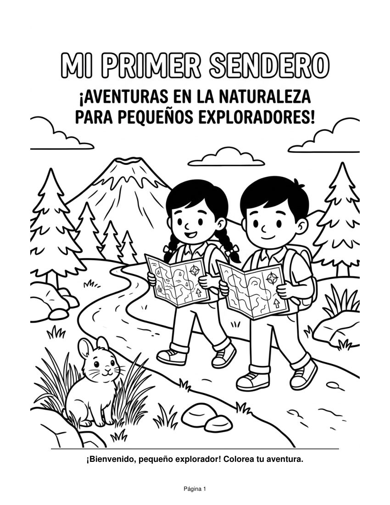
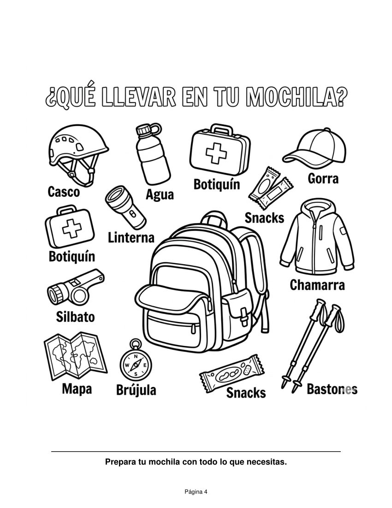
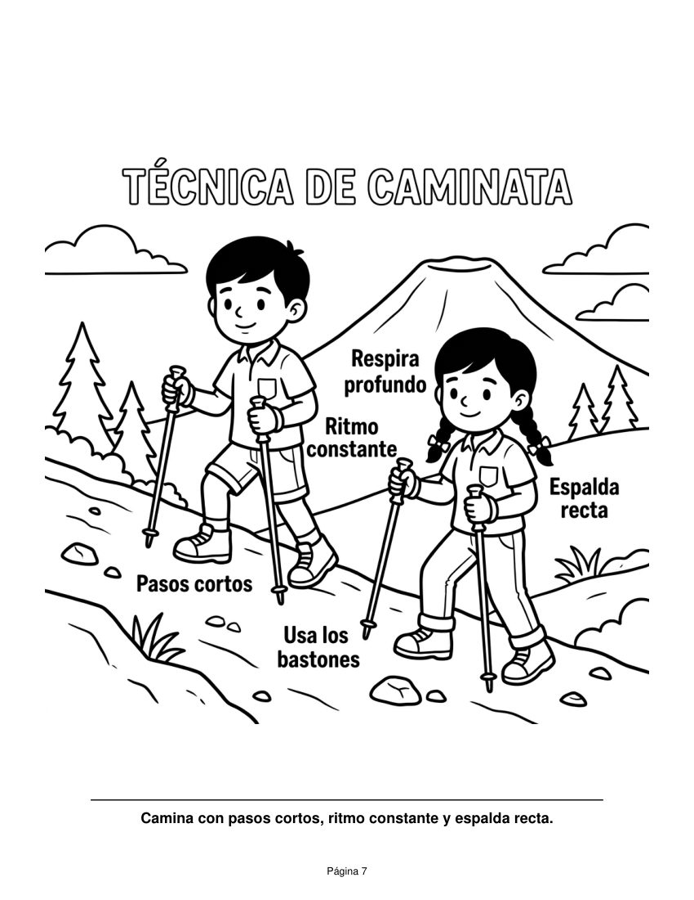
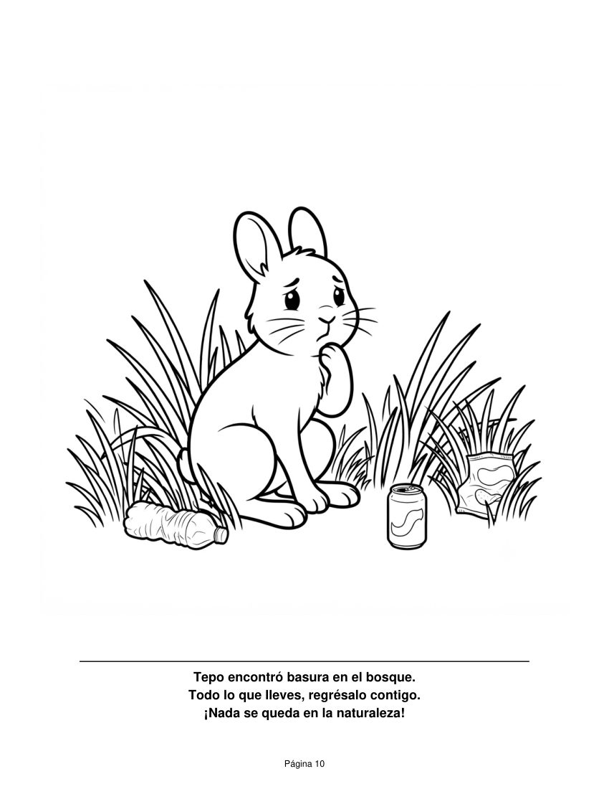

Campamentos, cumpleaños y caminatas pensadas para que niñas y niños descubran la naturaleza de forma segura, divertida y con mucho aprendizaje.
🥾 Desde los 6 años, acompañados por un adulto

Primeros auxilios, botiquín y radio de comunicación en cada salida.
Proporción de 1 guía por cada 6 participantes, con personal al final del grupo para que nadie se quede atrás.
Cuadernillos de campo y pláticas ambientales adaptadas a su edad.
Aprenden a respetar el entorno y a convivir con él. Todo lo que sube, tiene que bajar.

Una noche bajo las estrellas, fogata y aventura en la montaña.
Conocer más →
Celebra en la naturaleza con juegos, exploración y recuerdos únicos.
Conocer más →Su primer contacto con la montaña, en caminatas guiadas para familias.
Conocer más →Campamentos para niñas y niños con fogata, juegos y mucha aventura, para vivir la naturaleza de día y de noche.

Un cumpleaños distinto: nada de salones. Organizamos un hike privado para el festejado y sus invitados, con una ruta a su medida y juegos.
¿Tienes una idea en mente? Cuéntanos y la armamos contigo.
Cotizar mi cumpleañosCaminatas para niñas y niños desde los 6 años, acompañados por un adulto. Son hikes para principiantes e intermedios, cada uno con un enfoque en el aprendizaje, la conexión con la naturaleza y el desarrollo personal.

Conoce a Mateo, Lucía y su amigo Tepo el conejito. Dibujos para colorear y aprender qué llevar en la mochila, cómo caminar con seguridad y cómo cuidar el sendero. Descárgalo e imprímelo.




Escríbenos y armamos la experiencia ideal para tu familia: campamento, cumpleaños o su primer sendero.